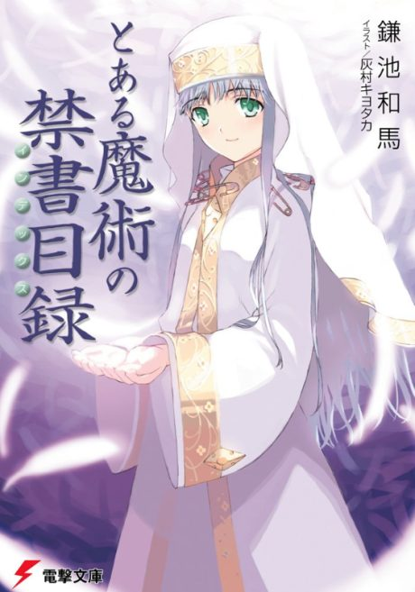

A Certain Magical Index
とある魔術の禁書目録
After the anime, read the light novel from Volume New Testament 1.
7.0AniList score
—Animeter, no votes yet
74episodes, 3 seasons
Is it worth pushing through?
Built from what visitors report across all 3 seasons (74 episodes).
Loading reports…Checking what other people said about this one.
Sign in above with your email to add your report.